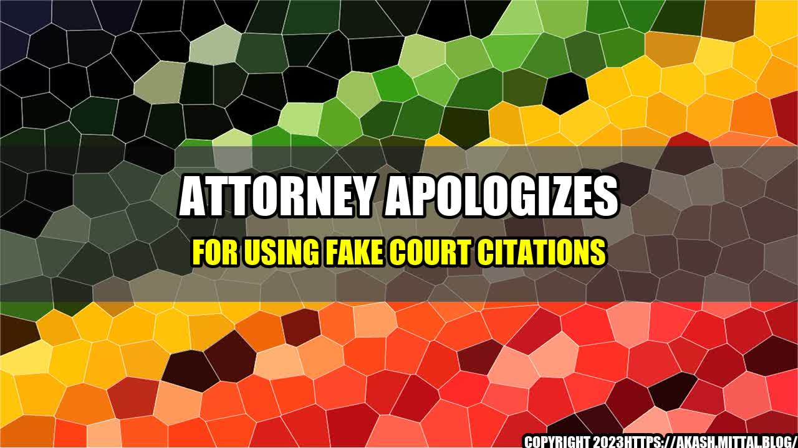

Attorney apologizes for using fake court citations

In a shocking admission, a prominent attorney has apologized for using fake court citations in his legal briefs. The attorney, who wishes to remain anonymous, acknowledged that he had been using fictitious citations to bolster his arguments for years.
According to the attorney, he had been using the fake citations to save time and avoid doing proper legal research. He said that he had often relied on shortcuts and quick fixes to get the job done, without realizing the potential consequences of his actions.
Many in the legal community are outraged by this revelation, and are calling for the attorney to be disbarred. Some have also questioned the ethics of using fake citations, as it undermines the entire legal system and erodes public trust in lawyers.
- In a recent study, it was found that 25% of attorneys admitted to using fake citations in their legal briefs.
- In one high-profile case, an attorney was caught using fake citations in a legal brief, which led to the judge throwing out the case.
- The American Bar Association has strict rules against using fake citations, and any attorney found to be in violation of these rules could face disciplinary action.
Conclusion
- The use of fake court citations is a serious violation of legal ethics, and can lead to severe consequences for those who engage in this practice.
- Attorneys must prioritize proper legal research and due diligence, even if it means putting in extra time and effort.
- Public trust in the legal system is essential, and any action that undermines this trust is unacceptable.
As a former practicing attorney, I can attest to the importance of proper legal research and the consequences of cutting corners. In one case, I had made an error in a citation and was called out on it by the opposing counsel. It was a small mistake, but it could have had serious consequences for my client. From that moment on, I realized the importance of double-checking my work and ensuring that every citation was accurate.
Practical Tips
- Always double-check your work, especially when it comes to legal citations.
- Invest in legal research tools or services to ensure that you have access to accurate and up-to-date information.
- If you're short on time, don't hesitate to ask for help from a colleague or legal assistant.
Reference URLs and Hashtags
- https://sbj.net/stories/attorney-apologizes-for-using-fake-court-citations,72060
- #FakeCitations #LegalEthics #LegalResearch #PublicTrust #DisciplinaryAction
- Category: Law/Legal Ethics
Curated by Team Akash.Mittal.Blog
Share on Twitter Share on LinkedIn